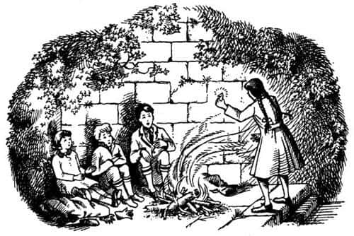
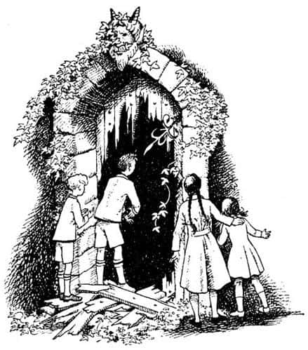
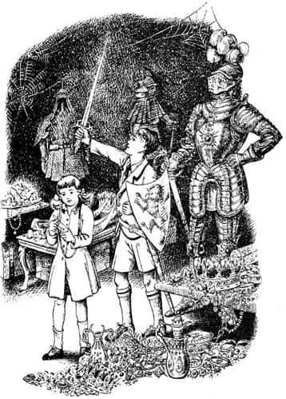

Antik Hazine Evi
“Burası bir bahçe değilmiş” dedi Susan az sonra. “Bir kaleymiş. Bu da avlusu olmalı.”
“Ne demek istediğini anlıyorum” dedi Peter. “Evet. İşte şu, bir kuleden geriye kalanlar. Şurada da merdivenler var sanırım; duvarların üstüne çıkıyor. Kapıya doğru giden başka merdivenler de var, bakın – geniş ve alçak merdivenler. Büyük salona açılan kapı olmalı bu.”
“Görünüşe bakılırsa, yüzyıllar öncesinden kalma” dedi Edmund.
“Evet, yüzyıllar öncesinden” dedi Peter. “Keşke bu kalede kimlerin, ne kadar zaman önce yaşadığını bilebilseydik.”
“Bana tuhaf bir duygu veriyor burası” dedi Lucy.
“Sahi mi Lu?” dedi Peter, dönüp ona dikkatle bakarak. “Çünkü ben de garip şeyler hissediyorum. Bu tuhaf günün en tuhaf olayı bu olsa gerek. Acaba neredeyiz? Ayrıca bütün bunlar ne anlama geliyor?”
Konuşarak yürürken avluyu geçmiş ve diğer kapıdan, eskiden salon olduğu anlaşılan yere girmişlerdi. Burası bir bahçeye benziyordu. Sadece daha dar, daha küçüktü ve duvarları daha yüksekti. Tavanı çok önceleri yıkılmış olmalıydı. Şimdi zemini çimenler ve papatyalarla kaplı, bambaşka bir görünüme sahipti. Karşıda, zeminden bir metre yükseklikte bir teras vardı.
“Gerçekten salon muydu acaba burası, çok merak ediyorum” dedi Susan. “Şu terasa benzer şey ne?”
“Gülünç olma” dedi Peter (tuhaf bir heyecana kapılmıştı), “görmüyor musun? Orası kralın ve saygıdeğer lordların oturduğu soylular masasının bulunduğu yer. Bir zamanlar bizim de kral ve kraliçe olduğumuzu ve büyük salonumuzda, aynı buna benzer bir kürsüde oturduğumuzu unuttun mu yoksa?”
“Narnia’da, büyük nehrin ağzındaki” diye devam etti Susan, sanki rüyadaymış ve şarkı söylüyormuş gibi bir sesle, “Cair Paravel Kalesi’nde. Nasıl unutabilirim ki?”
“Her şey nasıl da hemen hatırlanıyor!” dedi Lucy. “Şimdi, Cair Paravel’de olduğumuzu varsayalım. Bu salon, ziyafet verdiğimiz salona çok benziyordu herhalde.”
“Ama ne yazık ki ziyafet yok” dedi Edmund. “Geç oldu biliyorsunuz. Bakın gölgeler nasıl da uzadı. Havanın soğuduğunu fark ettiniz mi?”
“Geceyi burada geçirmek zorunda kalırsak bir kamp ateşine ihtiyacımız olacak” dedi Peter. “Bende kibrit var. Gidip çalı çırpı bulmaya çalışalım.”
Bunun zekice olduğunda hemfikirdiler. Sonraki yarım saat boyunca hepsi çok meşguldü. Harabelere girmeden önce içinden geçtikleri elma bahçesinin, yakacak odun bulmak için uygun bir yer olmadığı ortaya çıkmıştı. Salonu geçerek küçük bir yan kapıdan, bir zamanlar kalenin koridorları ve küçük odaları olduğu anlaşılan, ancak şimdi ısırganlar ve yabangülleriyle kaplı, labirente benzer girinti ve çıkıntıların her tarafını araştırdılar. Kale duvarında buldukları bir gedikten geçince, yerde kuru dallar, çürümüş ağaçlar, yapraklar ve kozalakların olduğu büyük ve sık bir ağaçlık alana girdiler. Yüksek salonda hatırı sayılır bir yığın oluşana kadar taşıdılar. Beşinci seferde salonun hemen dışında, yabani otların altında gizlenmiş kuyuyu buldular. Otları temizlediklerinde derin kuyunun suyunun temiz olduğunu anladılar. Taş döşeli patika, kuyunun çevresinden dolanıyordu. Sonra kızlar biraz daha elma toplamak için dışarıya çıktı. Oğlanlarsa, tehlike yaratmayacak ve salonu en iyi ısıtacak yer olduğunu umdukları, iki duvarın kesiştiği köşeye çok yakın bir yerde ateş yaktılar. Ateş yakarken oldukça zorlanmışlar, bir sürü kibrit harcamışlar, ama en sonunda başarmışlardı. Dördü birden sırtlarını duvara, yüzlerini ateşe vererek oturdu. Elmalardan bazılarını değneklerin ucuna takıp közlemeyi denediler. Ancak közde elma, şeker yoksa pek iyi olmaz, lezzetsizdir. Ayrıca çok sıcak olduğu için elle tutulmaz, soğumasını beklemek gerekir. Bu nedenle karınlarını çiğ elmalarla doyurmak zorunda kaldılar. Edmund’un dediği gibi bu, onlara, okul yemeklerinin aslında çok da kötü olmadığını düşündürdü. “Şu anda kalın bir dilim ekmek ve tereyağ hiç de fena olmazdı” diye ekledi Edmund. Ancak doğrusunu isterseniz, maceracı damarları kabardığı için hiçbiri okula geri dönmek istemiyordu.
Son elmayı da yedikten kısa bir süre sonra, Susan su içmek için kuyuya gitti. Geri döndüğünde elinde bir şey vardı:

“Bakın” dedi boğulurcasına bir sesle. “Kuyunun yanında buldum.” Elindekini Peter’e verip oturdu. Diğerleri onun ağlamaklı bir sesle konuştuğunu düşündüler. Edmund ve Lucy, Peter’in elinde ne olduğunu görmek için sabırsızlıkla eğildi; ateşte parlayan küçük, parlak bir şey.
Şimdi hepsi ne olduğunu görüyordu; sıradan büyüklükte, ancak som altından yapıldığı için aşırı derecede ağır olan küçük bir satranç atıydı; atın gözleri iki minik yakuttan yapılmıştı, daha doğrusu biri öyleydi, çünkü diğeri yerinde değildi.
“Gerçekten” dedi Lucy, “aynen, Cair Paravel’in kral ve kraliçeleriyken oynadığımız altın satranç taşlarından birine benziyor.”
“Neşelen Su” dedi Peter kız kardeşine.
“Elimden gelmiyor” dedi Susan. “Bana – ah, öylesine güzel zamanları hatırlattı ki! Satranç oynadığım insan vücutlu, keçi ayaklı ve keçi boynuzlu faunları ve iyi devleri, denizde şarkı söyleyen denizkızlarını ve denizoğlanlarını, güzel atımı hatırladım ve – ve—”
“Şimdi” dedi Peter, ciddi bir sesle, “Dördümüzün de aklını çalıştırma zamanı geldi.”
“Nasıl yani?” diye sordu Edmund.
“Hiçbiriniz nerede olduğumuzu anlayamadı mı?” dedi Peter.
“Devam et, devam et” dedi Lucy. “Saatlerdir buranın harika ve gizemli bir hikâyesi olduğunu hissediyordum.”
“Dök bakalım eteğindeki taşları Peter” dedi Edmund. “Seni dinliyoruz.”
“Cair Paravel harabelerindeyiz” dedi Peter.
“Ama bana göre—” diye başladı söze Edmund. “Yani, bunu nereden çıkarıyorsun? Burası yüzyıllardır harabe halinde. Kapıların dibindeki şu büyük ağaçlara baksana. Şu taşlara bak. Buranın yüzlerce yıl önce terk edilmiş olduğunu herkes anlayabilir.”
“Biliyorum” dedi Peter. “Sorun da burada. Ancak bunu bir an için unutalım. Her konuyu tek tek incelemek istiyorum. Birincisi, bu salon, Cair Paravel’deki salonla aynı şekil ve büyüklükte. Sadece bunun bir çatısı olduğunu ve ot yerine renkli bir zemin, duvarlarda da tablolar olduğunu düşünün; işte bizim kraliyet ziyafet salonu.”
Kimse bir şey söylemedi.
“İkincisi, kalenin kuyusu, tam da bizim kuyumuzun olduğu yerde; büyük salonun biraz güneyinde ve tastamam aynı şekil ve büyüklükte.”
Yine hiç ses çıkmadı.
“Üçüncüsü, Susan az önce bizim eski satranç taşlarımızdan birini buldu, ona tıpatıp benzeyen başka bir şeydi o derseniz, bilmem.”
Hâlâ kimse konuşmuyordu.
“Dördüncüsü, Calormen Kralı’nın elçileri gelmeden bir gün önce, Cair Paravel’in kuzey kapısının dışına ağaç diktiğimizi hatırlamıyor musunuz? Orman insanlarının en muhteşemi Pomona iyi büyüler yapmak için gelmişti. O çok nazik ve dürüst dostlarımız, küçük köstebeklerdi gerçek kazıyı yapan. Köstebeklerin başkanı, yaşlı ve komik Pamukel’in küreğinden destek alarak ‘Sizi temin ederim Majesteleri, bir gün bu meyve ağaçlarını diktiğinize şükredeceksiniz’ dediğini nasıl unutabilirsiniz? Gerçekten de haklıymış.”
“Hatırlıyorum, hatırlıyorum” dedi Lucy ve ellerini çırptı.
“Ama bana bak Peter” dedi Edmund. “Bütün bunlar çok saçma. Bir kere ağaçları gelişigüzel dikmemiştik, kapıyı örtmeleri söz konusu olamaz. O kadar aptal değildik.”
“Hayır, elbette değildik” dedi Peter. “O zamandan beri ağaçlar kapıya kadar yayılmış.”
“Bir şey daha var” dedi Edmund, “Cair Paravel bir adada değildi.”
“Evet, bunu ben de merak ediyordum. Fakat, ne bileyim… evet yarımadadaydı ama neredeyse bir ada gibiydi. Bizim zamanımızdan bu yana bir adaya dönüştürülmüş olamaz mı? Birisi bir kanal kazmış olmalı.”
“Dur bir dakika!” dedi Edmund. “Bizim zamanımızdan beri deyip duruyorsun. Ama biz Narnia’dan döneli sadece bir yıl oldu. Ve sen, bir yılda kalelerin yıkıldığını, büyük ormanların oluştuğunu, diktiğimiz fidanların büyük, yaşlı ağaçlara dönüştüğünü ve başka bilmem nelerin olduğunu söylüyorsun. Bütün bunlar imkânsız.”
“Bir şey var” dedi Lucy. “Eğer burası Cair Paravel’se, salonun bu tarafında bir kapı olması gerekir; tam arkamızda. Biliyorsunuz işte aşağıya, hazine odasına giden kapı.”
“Sanırım bir kapı yok” dedi Peter ayağa kalkarak.
Arkalarındaki duvar bir sarmaşık yumağıydı.
“Birazdan öğreniriz” dedi Edmund, ateşe koymak için hazırladıkları değneklerden birini alarak. Sarmaşıklı duvara vurmaya başladı. Taşa değen değnek tak tak diye ses çıkardı, sonra yine aynı ses ve sonra aniden bom bom diye oldukça değişik, yankılı, ahşaptan çıkıyormuş gibi gelen bir ses.
“Büyük Tanrım!” dedi Edmund.
“Bu sarmaşıklardan kurtulmamız gerek” dedi Peter.
“Boşverin şimdi” dedi Susan. “Sabahleyin deneriz. Eğer geceyi burada geçireceksek, arkamda açık bir kapı ve nemli bir esintinin yanı sıra, içinden neyin çıkacağını bilmediğim, büyük, karanlık bir delik istemiyorum. Ayrıca birazdan hava kararacak.”
“Ne diyorsun sen Susan! Ne diyorsun?” dedi Lucy sitem dolu bir bakışla. İki oğlan da Susan’ın endişesini fark etmeyecek kadar heyecanlıydı. Ellerini ve Peter’in çakısını kullanarak sarmaşıklarla uğraştılar. Sonra Peter’in çakısı kırıldı, işe Edmund’un çakısıyla devam ettiler. Oturdukları yer kısa sürede sarmaşık yığınıyla dolmuştu. Sonunda kapıya ulaşmayı başardılar.
“E tabii kilitli” dedi Peter.
“Ama tahtalar çürük” dedi Edmund. “Kırıveririz, hem fazladan yakacak odunumuz olur. Haydi.”
Beklediklerinden daha uzun sürmüştü, işleri bitmeden önce büyük salon alacakaranlığa boğulmuş, gökyüzünde bir-iki yıldız görünmüştü. Oğlanlar parçalanmış odun yığınının yanında dikilip ellerinin kirini ovalıyorlardı. Soğuk ve karanlık deliğe bakarken bir ürperti hisseden sadece Susan değildi.
“Şimdi bir meşale lazım” dedi Peter.
“Ne işe yarayacak peki?” dedi Susan. “Ve Edmund’un dediği gibi—”
“Artık bir şey demiyorum” diye sözünü kesti Edmund. “Hâlâ anlayamıyorum, ama bunu daha sonra halledebiliriz. Peter, sanırım aşağı geleceksin, öyle değil mi?”
“İnmemiz gerek” dedi Peter. “Keyiflen Susan. Artık Narnia’da olduğumuza göre küçük çocuklar gibi davranmanın anlamı yok. Bir kraliçesin sen. Zaten bilinmedik bu kadar çok şey varken kimsenin gözüne uyku girmez.”

Uzun değnekleri meşale olarak kullanmayı denediler, ama pek işe yaramadı. Meşaleyi kaldırdıklarında ateş sönüyor, baş aşağı tuttuklarındaysa elleri yanıyor, gözlerine duman kaçıyordu. Sonunda Edmund’un el fenerini kullanmak zorunda kaldılar. Fener bir hafta kadar önce Edmund’a doğum günü hediyesi olarak verilmişti; şanslıydılar çünkü pilleri yepyeniydi. Edmund elinde fenerle en önde yürüyordu. Sonra Lucy, sonra Susan geliyordu ve en arkada da Peter vardı.
“Merdivenlerin başına geldim” dedi Edmund.
“Basamakları say” dedi Peter.
“Bir, iki, üç” diye saymaya başladı Edmund, dikkatle aşağı inerken. Böylece on altıya kadar saydı. “Merdiven tam burada bitiyor” diye bağırdı.
“Öyleyse burası gerçekten Cair Paravel olmalı” dedi Lucy. “On altı basamak vardı.” Herkes merdivenin dibinde toplanana kadar hiç konuşmadılar. Sonra Edmund fenerini usul usul etrafta gezdirdi.
“Vaaaaaayyyy!!” diye bağırdılar hep bir ağızdan.
Evet artık hepsi Narnia’nın kral ve kraliçeleriyken hükmettikleri Cair Paravel’in antik hazine odasında olduklarını biliyorlardı. Ortada – seralarda olduğu gibi – patikaya benzer bir yol, yolun her iki tarafında pahalı şövalye zırhları vardı, sanki hazineyi koruyorlardı. Yolun her iki yanında ve zırhların aralarında değerli eşyalarla dolu raflar vardı – gerdanlıklar, bilezik türü şeyler, yüzükler, altın kâseler ve tabaklar, uzun fildişleri, broşlar, taçlar ve altın zincirler – bilye ya da patates yığınlarına benzeyen değerli taş tepecikleri vardı; elmas, yakut, lâl, yeşim ve mor ametist taşları. Rafların altında demir çemberlerle sağlamlaştırılmış kilitli, büyük meşe sandıklar bulunmaktaydı. Keskin bir soğuk vardı ve etraf öylesine sessizdi ki, soluklarını duyabiliyorlardı. Her şey toz içindeydi; nerede olduklarını bilmeseler ve birçok şeyi hatırlamasalar, orada bir hazine olduğunun farkına bile varamayacaklardı. Uzun süre önce terk edilmiş gibi görünen bu yerde, hüzünlü ve biraz da ürkütücü bir hava vardı. En azından bir dakika boyunca kimsenin ses seda çıkarmamasının nedeni buydu.
Elbette yürümeye devam ettiler. Bakmak için bazı şeyleri ellerine aldılar. Sanki eski dostlarla buluşmuş gibiydiler. Orada olsaydınız şuna benzer konuşmalar duyabilirdiniz: “Aa bakın! Taç giyme törenindeki yüzüklerimiz.” “Bunu ilk giydiğin zamanı hatırlıyor musun?” “Aaaa, bu kaybolduğunu sandığımız broş.” “Şu Issız Adalar’daki turnuvada giydiğin zırh değil mi?” “Bunu bana yapan cüceyi hatılıyor musun?” “Şu boynuzla ne içtiğini hatırlıyor musun? Hatırlıyor musun, hatırlıyor musun?”
Ancak Edmund onları uyardı: “Hey bana bakın. Pilleri harcamayalım. Ne zaman ihtiyacımız olacağını Tanrı bilir. İstediklerimizi alıp dışarı çıksak iyi olmaz mı?”
“Hediyeleri almamız lazım” dedi Peter. Uzun zaman önce, bir Noel günü Narnia’da, Peter, Susan ve Lucy’ye, koca imparatorluktan daha değerli buldukları hediyeler gelmişti. O sırada onlarla birlikte olmayan Edmund’un hediyesi yoktu. (Bu kendi hatasıydı, bunu bir başka kitapta okuyabilirsiniz.)
Herkes Peter’le aynı fikirdeydi. Yolu izleyerek hazine odasının öbür ucundaki duvara doğru yürüdüler. Gerçekten de hediyeler duvarda asılıydı. En küçük hediye Lucy’ninkiydi. Sadece minik bir şişeydi ama cam değildi, elmastan yapılmıştı ve yarıdan fazlası hemen hemen her yarayı ve hastalığı iyileştirebilen, büyülü likörle doluydu. Lucy tek söz etmeden hediyesini yerinden aldı. Şişenin bağlı olduğu kemeri omzuna atarken ciddi bir tavır takınmıştı. Şimdi kendini, aynı eski günlerde olduğu gibi güçlü hissediyordu. Susan’ın hediyeleri bir yay, oklar ve bir boruydu. Yay ve tüylü oklarla dolu güzel fildişi sadak hâlâ oradaydı, ama…
“Susan!” dedi Lucy. “Boru nerede?”
“Hay aksi şeytan” dedi Susan, bir an düşündükten sonra. “Şimdi hatırladım. Son gün, Beyaz Geyik’i avlamaya gittiğimizde boruyu yanıma almıştım. Öteki yere, yani İngiltere’ye geçtiğimizde kaybolmuş olmalı.”
Edmund bir ıslık çaldı. Bu gerçekten kötü bir kayıptı; çünkü büyülü bir boruydu ve nerede olursanız olun çaldığınızda, kesinlikle yardım gelirdi.
“Tam da böyle bir yerde işe yarayacak şeydi” dedi Edmund.
“Fark etmez” dedi Susan. “Yayım hâlâ burada” diyerek yayı eline aldı.
“İpi çürümüş olmasın Su?” dedi Peter.
Hazine odasının büyülü havasından ya da başka bir şeyin yardımıyla olsa gerek, yay hâlâ sapasağlamdı. Okçuluk ve yüzücülük, Susan’ın iyi becerdiği işlerdi. Biraz sonra ipi hafifçe çekerek yayı germişti. Yay tınladı, sesi odanın her yanında hoş bir şekilde yankılandı. Bu cılız ses eski günleri, şimdiye kadar olan her şeyden daha fazla hatırlatmıştı çocuklara. Bütün savaşlar, avlar ve ziyafetler gözlerinin önünden geçti.
Sonra Susan yayın ipini tekrar çözdü ve sadağı beline astı.
Sıra Peter’in hediyesini indirmeye gelmişti – üzerinde büyük, kırmızı aslan şeklinin bulunduğu kalkan ve kraliyet kılıcı. Tozunu almak için üfledi ve yere vurdu. Kalkanı koluna taktı, kılıcı beline astı. Başlangıçta, kılıcın paslanıp kınına yapışmış olmasından korkmuştu, ama korktuğu başına gelmedi. Ani bir hareketle kılıcını çekti ve havaya kaldırdı. Kılıç fenerin ışığında parıldadı.

“Bu benim kılıcım Keskin” dedi; “kurdu bununla öldürdüm ben.” Sesine yeni bir ton vermişti ve diğerleri, onun yeniden Yüce Kral Peter olduğunu hissediyorlardı. Bir anlık duraksamadan sonra herkes, pillerin boş yere harcanmaması gerektiğini hatırladı.
Merdivenleri tırmandılar, büyük bir ateş yaktılar ve üşümemek için birbirlerine sokulup yattılar. Yer çok sertti, pek rahat edemediler ama sonunda uyudular.